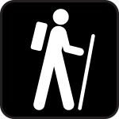

People of any age can hike to peaks, balds and waterfalls to see the wildflowers, old-growth trees, salamanders, and sunsets. You may go for an hour, a half day, overnight, for a week, or for a month. An excellent place to start if you have never hiked before is a "Quiet Walkway," short paths that depart from major roads in the park. These easy trails are normally no longer than a half mile and do not require any special hiking gear. After a short walk, these walkways will take you to a place much like the Garden of Eden, away from the stress that modern life brings. These paths do not receive a whole lot of foot traffic, so there is a good chance that you will have it all to yourself. Other short hikes are possible along the self-guiding nature trails. You will find these easy-to-follow trails at Smokemont, Elkmont, Sugarlands, Cades Cove, Laurel Falls, and several other places. Look for the signs along the roadways that have an international symbol of a person walking.
Day Hikes Here are some suggestions for longer day hikes in the different areas of the park. Smokemont Loop, Smokemount Campground: A pretty easy six-mile roundtrip hike through cove hard-wood and hemlock forrests. Historic homesites and an old cemetery can be found along the trail. The trail head is near campsite D-19. Mount Cammerer, Cosby Campground: A longer hike, about 10.4 miles roundtrip,
to a restored fire tower on the top of Mount Cammerer, one of the best views in the park. Boogerman Trail, Cataloochee Campground: From Caldwell Fork Trail, this loop trail traverses a forest of big trees in a remote part of
the park; 7.4 miles roundtrip. Cumberland Gap Loop, Elkmont Campground: Start at the Little River Trail trailhead and hike 2.4 miles the Cumberland Gap Trail. Follow the latter trail 2.4 miles to Jakes Creek Trail, after which
you turn right and return past the old cabins to your starting point. A good trail for wildflowers in the spring. Rainbow Falls, Cherokee Orchard Road: A moderate 5.6-mile round-trip hike to a lovely, 80-foot-high waterfall.
If you still have energy left once you reach the falls, you can continue for another 4 miles to the top of Mt. Leconte.
forrests. Historic homesites and an old cemetery can be found along the trail. The trail head is near campsite D-19. Mount Cammerer, Cosby Campground: A longer hike, about 10.4 miles roundtrip,
to a restored fire tower on the top of Mount Cammerer, one of the best views in the park. Boogerman Trail, Cataloochee Campground: From Caldwell Fork Trail, this loop trail traverses a forest of big trees in a remote part of
the park; 7.4 miles roundtrip. Cumberland Gap Loop, Elkmont Campground: Start at the Little River Trail trailhead and hike 2.4 miles the Cumberland Gap Trail. Follow the latter trail 2.4 miles to Jakes Creek Trail, after which
you turn right and return past the old cabins to your starting point. A good trail for wildflowers in the spring. Rainbow Falls, Cherokee Orchard Road: A moderate 5.6-mile round-trip hike to a lovely, 80-foot-high waterfall.
If you still have energy left once you reach the falls, you can continue for another 4 miles to the top of Mt. Leconte.
- Water - Two liters of water per person is recommended. Bringing along a small water filter such as the Sawyer mini would be a good idea. Any water source that you find along your way will need to be filtered regardless of how clean it looks.
- Food - Snacks / Lunch will keep you going as you burn energy on the trail. Cliff Bars, Trail Mix, Peanuts are a few of the things that hikers enjoy on the trail.
- Map - Knowing where you are at and where you are going is very important when hiking so that you don't get lost. A map printed on waterproof / tear resistant paper is better than relying on your phone or other electronic device because it doesn't require batteries.
- Raingear and Extra Clothing - The weather can change dramatically in as little as a 300 ft. elevation gain. Being prepared for the changes in weather will ensure a memorable hike. Nylon or synthetic type materials that are moisture wicking work the best. Try to avoid cotton type materials because they are harder to dry out and will cause chills as it gets colder in higher elevation.
- Flashlight - A headlamp or small L.E.D flashlight is a very important item to have if you find yourself still on the trail when darkness falls. Check to make sure that it works before you set out and bring extra batteries.
- First Aid Kit - From blisters to bee stings, be prepared for any type of issues that you may encounter on your hike. The contents of a First Aid Kit will vary between hikers based on their medical conditions, the duration of their trip, and the area where they will be hiking. Be sure to store the First Aid Kit in a dry bag so it's contents do not get wet.
- Lighter / Matches - In the event of an emergency, you may need to build a fire to stay warm until help arrives. A fire can also be used to help rescue workers pinpoint your location. Other uses for a fire enclude cooking food and boiling water to make it safe to drink.
- Knife - a knife or leatherman multi-tool might come in handy to repair a broken piece of equipment or some other unforseen problem .
- Compass - a simple compass that indicates the magnetic north will come in very handy to orient you and your map.
Essential Items to Bring on a Hike